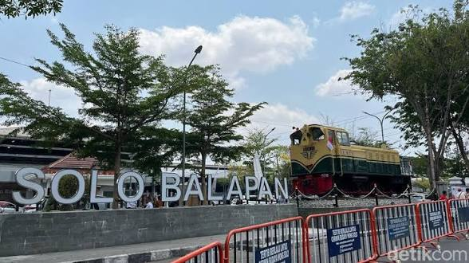

Wisata Bertanggung Jawab di Kota Surakarta

Saat berkunjung ke Kota Surakarta, wisatawan diharapkan ikut menjaga lingkungan, budaya, dan kenyamanan bersama.
Explore The Beauty of Solo
Saat berkunjung ke Kota Surakarta, wisatawan diharapkan ikut menjaga lingkungan, budaya, dan kenyamanan bersama.

Selalu membuang sampah pada tempatnya saat mengunjungi tempat wisata seperti Keraton Surakarta Hadiningrat dan Taman Sriwedari.

Gunakan pakaian sopan dan jaga sikap saat berkunjung ke kawasan budaya seperti Keraton Surakarta Hadiningrat.

Wisatawan dianjurkan membeli produk UMKM seperti batik dari Kampung Batik Laweyan sebagai bentuk dukungan ekonomi masyarakat lokal.

Gunakan transportasi umum seperti Batik Solo Trans atau berjalan kaki di area wisata untuk mengurangi polusi.